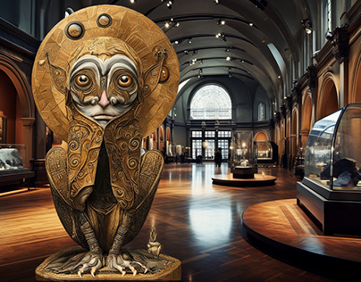
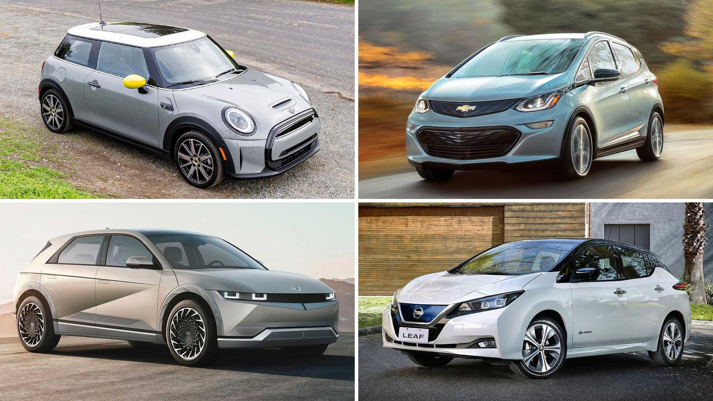
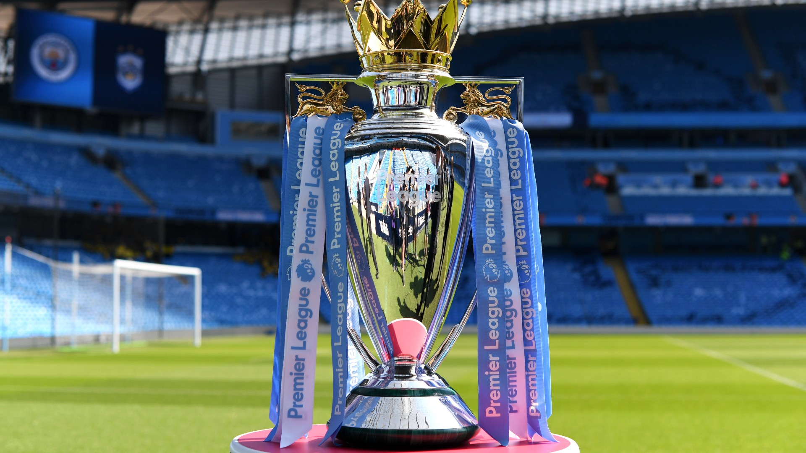
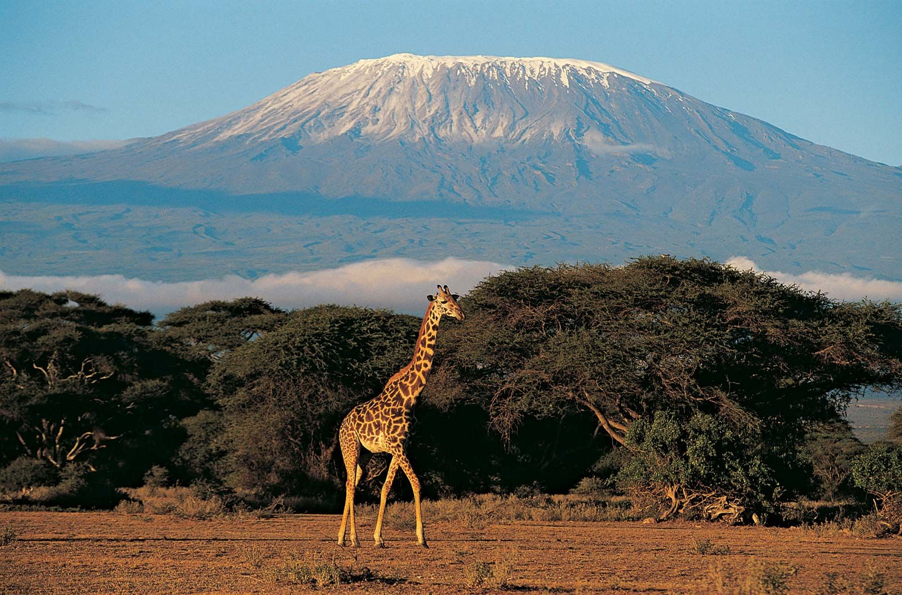
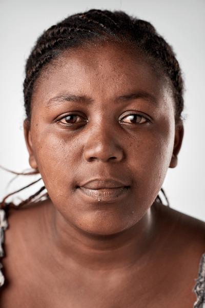

Every image tells a story that words often miss. Welcome to the Best Captions Photographic Site, a curated collection of moments frozen in time from the quietest whispers to the loudest celebrations, explore a collection of moments frozen in time.
The Egyptian frog statue.
Found in egypt and resembles a woman and a
child to be protected from R.Nile.
Act as presevation of history/information which exised early
before

Motor Vehicles
This represents images of outstanding car models.

English Premier Legue Cup
The great EPL cup which is competed for.

Mountain Veiw
This an example of a beautiful scenery representing a mountain
peak.

The site was created by three members who are currently at tertiary education level. 
All of us really have an
inbuild love/passion with photos.
We all come from Nakuru
county and were are at our youth age.
Our names are;
Cyprian
erick
joyce
For more information contact through our number;0700008888 or 0102220000.
HOMEPAGE